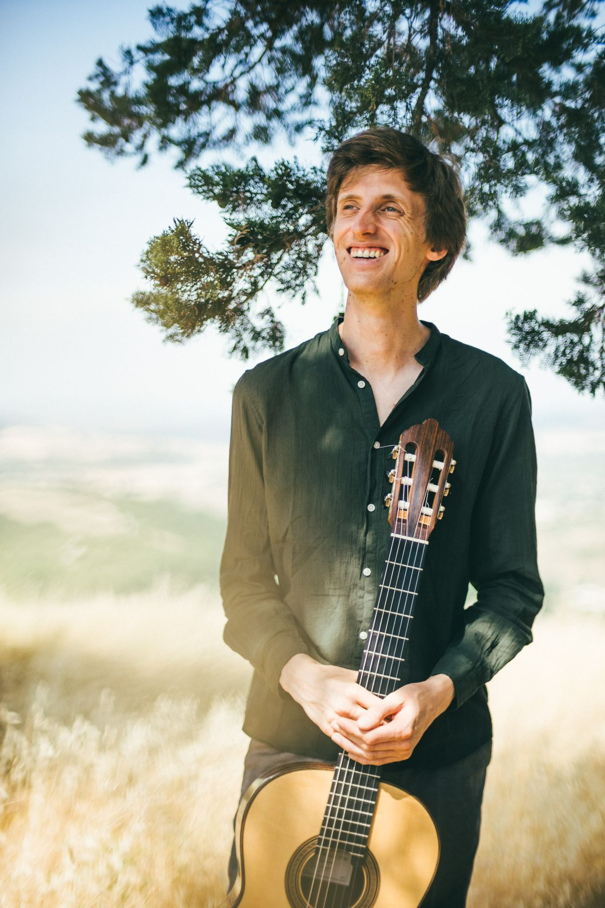

MAARTEN VANDENBEMDEN (Belgium, 1994)
guitare

Maarten Vandenbemden grew up in a house full of guitars, and began studying the instrument with his father. After obtaining his masters in music writing and guitar with Antigoni Goni at the Royal Flemish Conservatory of Brussels, he soon became one of the most visible Belgian guitarists of his generation. He plays in a wide variety of chamber music ensembles and as a soloist throughout Belgium and abroad, from Jordan to China and has collaborated in 10 studio recordings over the past eight years.
Maarten has made many arrangements for guitar solo, in duo with voice, piano and cello, and for guitar trio and quartet. He has made the arrangements for the acclaimed ‘Parole in Musica’ album by the Volterra Project Trio, and for the Four Aces Guitar Quartet. Many of his arrangements are published with Auurk editions.Since 2016, Maarten has been actively involved in the Volterra Project, for which he has co-developed different tailored lectures and workshops, including an improvisation workshop. He has a deep love for the challenging and marvelous field of music education and for the power of music in socio-cultural contexts.
Maarten is professor of Harmony & Analysis and Applied Harmony for guitarists at the Royal Conservatory of Brussels, and professor of guitar at the KASK&Conservatorium Gent (Belgium). He is researcher and lector within the Educative Masters in the Arts program of KCB and RITCS (Brussels).